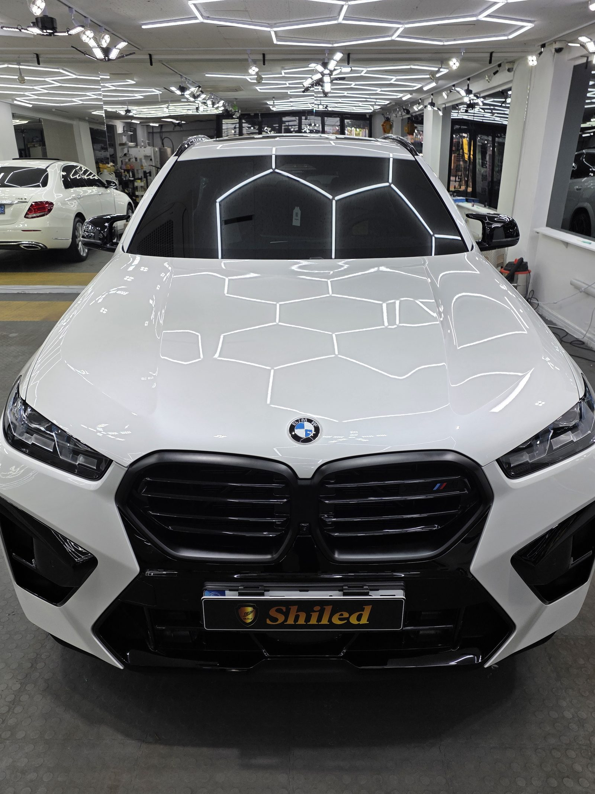
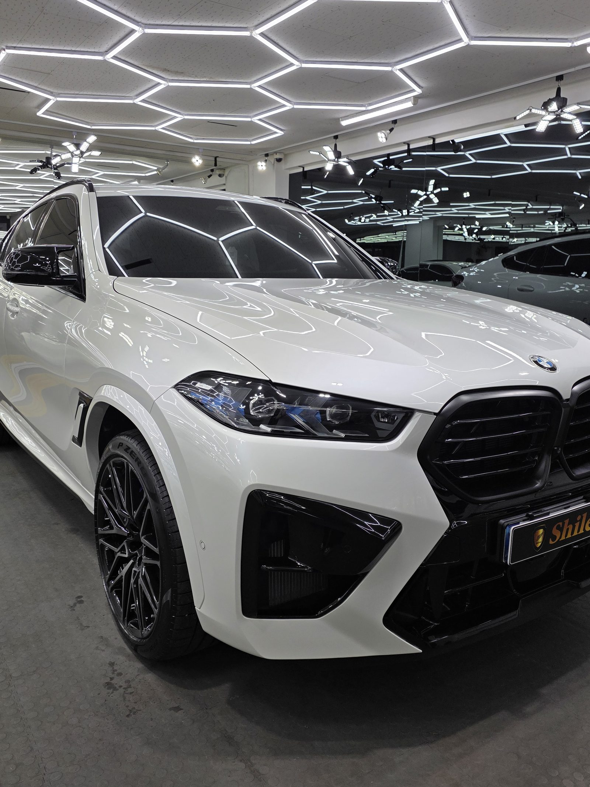
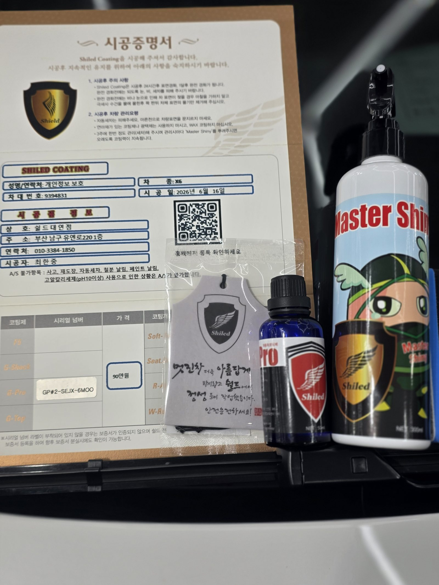
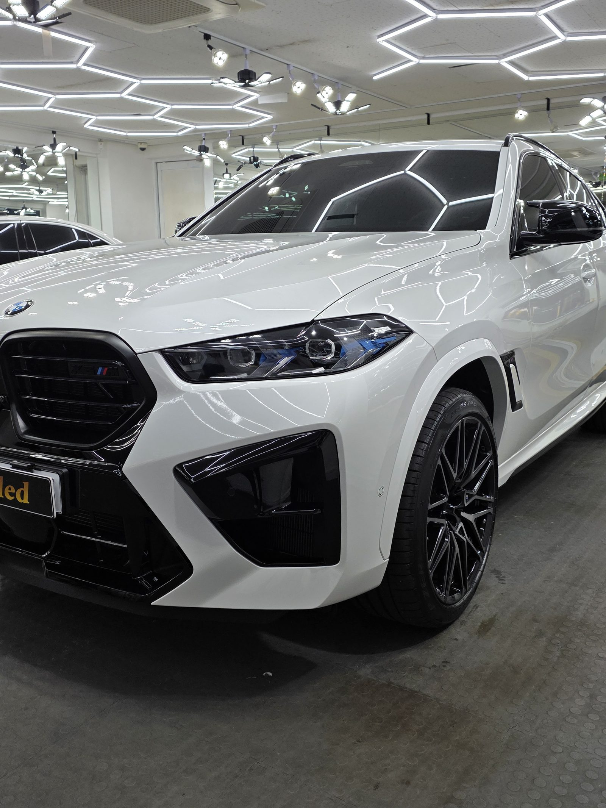
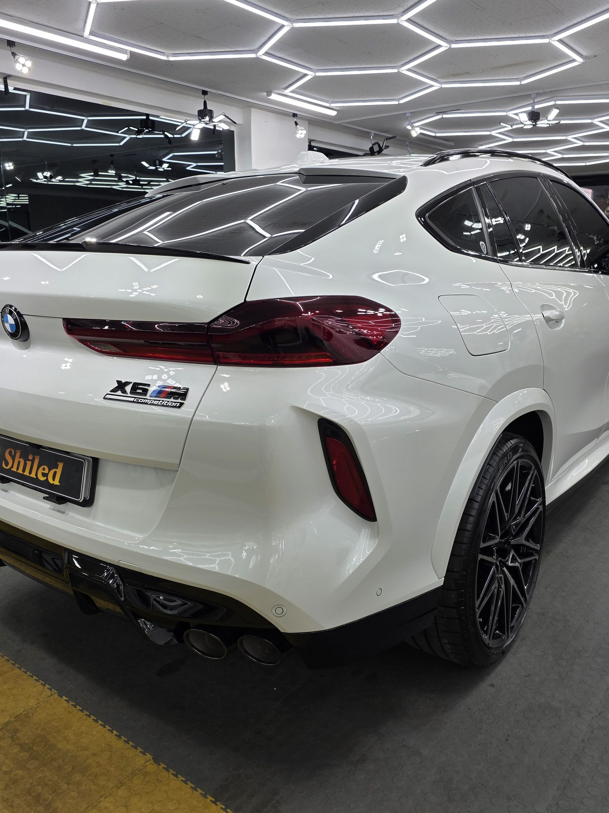
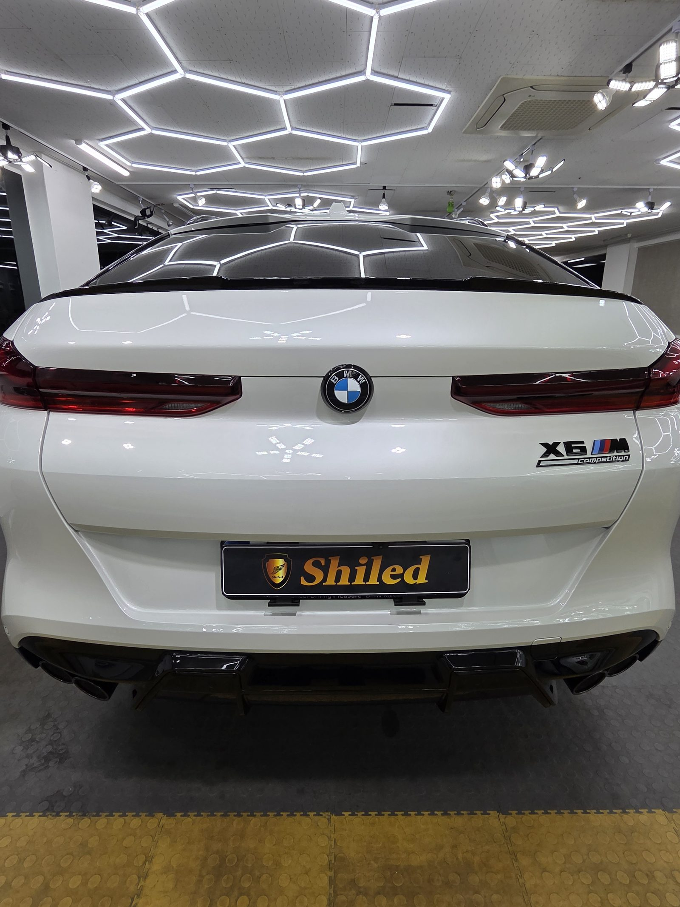

부산 쉴드광택에 들어온 BMW X6 M 컴페티션입니다. 화이트 바디, 한눈에 봐도 묵직한 차입니다.
이 차는 G-PRO 싱글코팅으로 진행했습니다.

왜 트리플이 아니라 G-PRO 싱글인가
코팅은 무조건 여러 겹 올린다고 좋은 게 아닙니다. 차와 운전 습관에 맞춰야 합니다.
G-PRO는 저희 제품 중 경도가 가장 높은 하드코팅입니다. 스크래치 내성과 내구성에 특화돼 있습니다. 이 차주분은 화려한 발색보다 단단하게 오래 보호되는 쪽을 원하셨습니다. 그래서 G-PRO 싱글로 잡았습니다.
기술자의 팁
흰색은 검정만큼 색감을 따질 일이 적습니다. 대신 잔기스와 오염 관리가 핵심입니다. G-PRO의 높은 경도가 바로 여기서 값을 합니다.

코팅 전, 전처리가 9할입니다
좋은 코팅도 더러운 바탕 위에 올리면 의미가 없습니다.
디테일링 세차로 표면 오염을 걷어내고, 철분 제거제로 박힌 쇳가루를 녹여냅니다. 탈지까지 끝내야 비로소 코팅을 올릴 면이 됩니다. 신차에 가까운 차라도 이 과정은 생략하지 않습니다.

모든 시공 차량에 시공증명서와 전용 관리제를 함께 드립니다
마감 후
헥사 조명이 보닛 위로 한 줄 한 줄 또렷하게 떨어집니다. 왜곡 없이 맺히는 반사가, 코팅막이 고르게 올라갔다는 증거입니다.
화이트 특유의 깨끗한 톤 위에, 단단한 보호막을 한 겹 입힌 상태입니다.


시공 후, 이렇게 관리하세요
코팅은 시공으로 끝이 아닙니다. 관리로 수명이 갈립니다. 전용 관리제 '마스터샤이니'를 함께 드리는 이유입니다.
완전 경화 전(약 하루)에는 비·눈·세차를 피해 주십시오. 자동세차(기계세차)는 브러시가 잔기스를 만드니 피하시는 게 좋습니다. 그리고 3주에 한 번 관리 세차 때 마스터샤이니를 뿌려주시면 코팅력이 오래 유지됩니다.

신차든 출고한 지 된 차든, 시작점이 다르면 결과도 다릅니다.
제품을 직접 만드는 사람이 직접 시공합니다.
부산에서 유리막코팅을 고민 중이시면 편하게 연락 주십시오.
어떤 차를 타냐보다 어떻게 타냐가 중요합니다~!
📞 010-3384-1850 견적 문의쉴드광택 · 부산 남구 유엔로220 1F · 대표 최한중